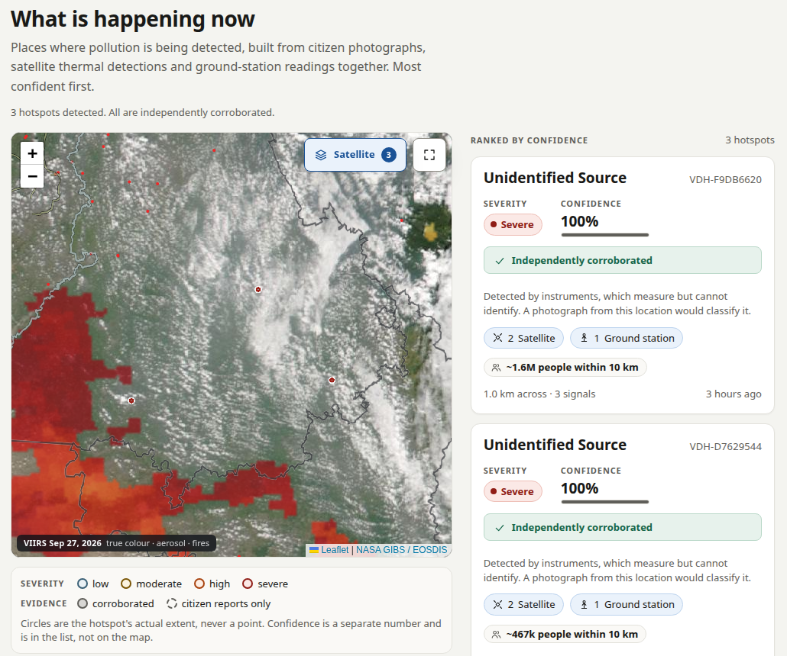
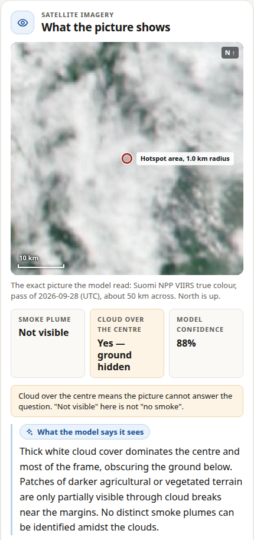
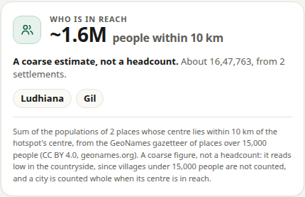
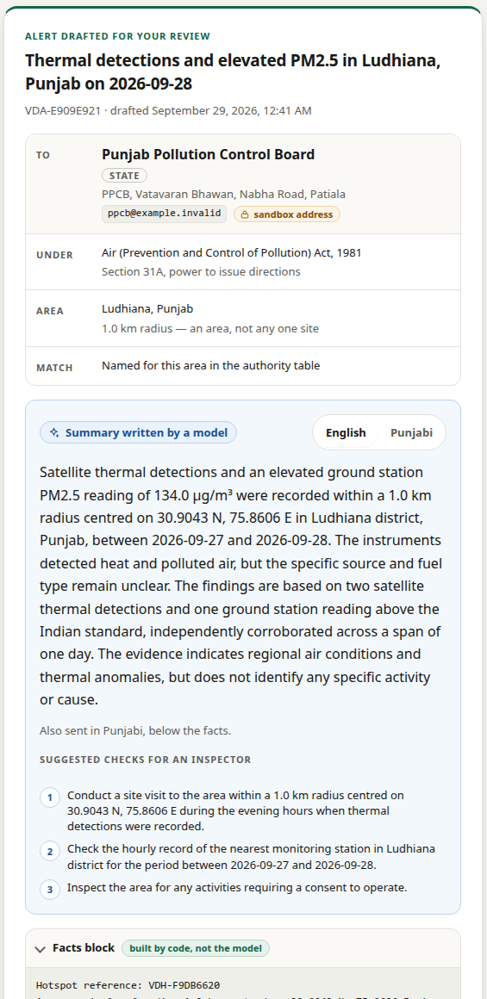
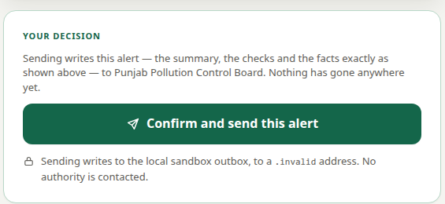
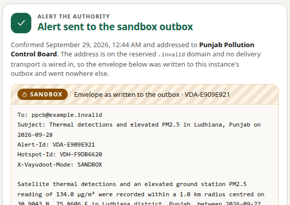
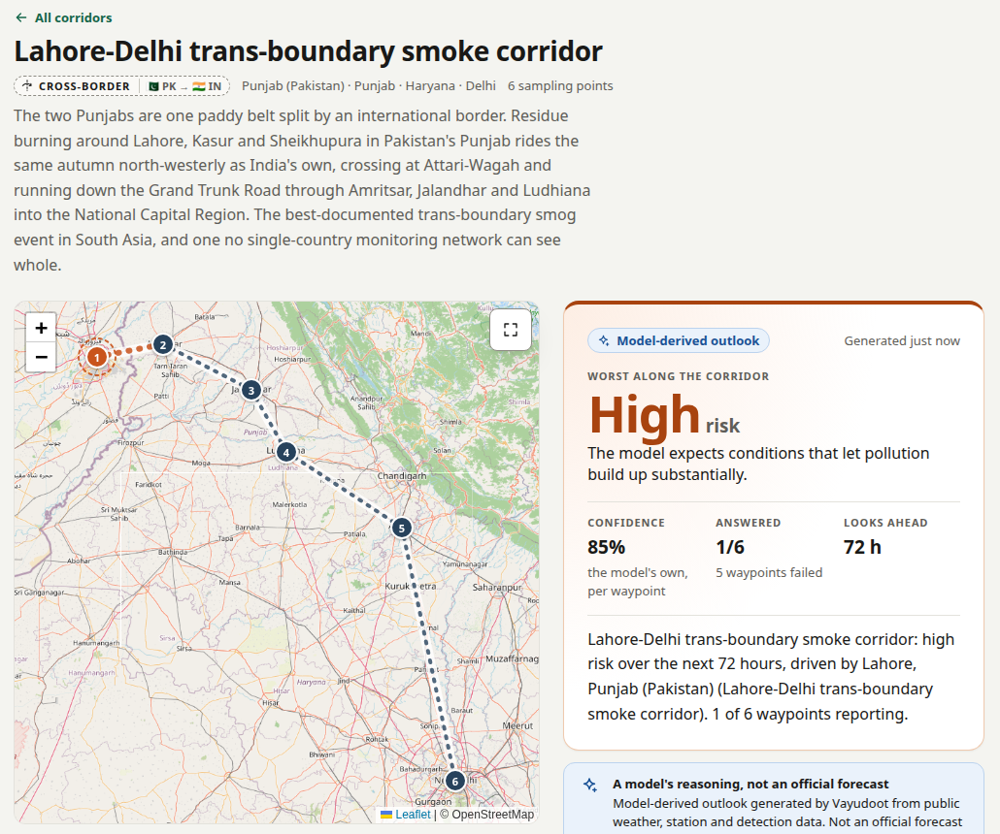
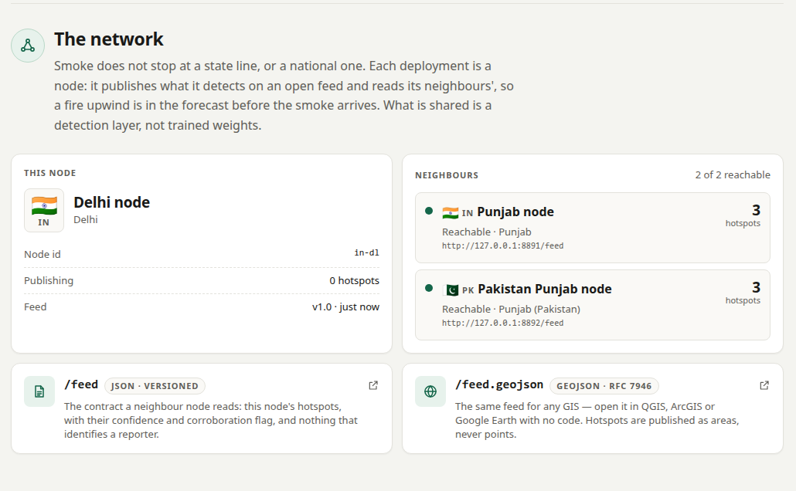

Build with AI: Code for Communities · BRICS edition · Track 2: Clean Air & Climate Resilience
A hyper-local pollution detection network in which citizen reports are one class of sensor.
It joins satellite fire detections, ground stations, weather and citizen photographs to find the pollution events city-scale monitoring misses — then forecasts what is coming along economic corridors, across borders, and hands the right authority a corroborated alert once a person confirms it.
Working prototype · vayudoot.onrender.com · 500+ tests · free tier, no credit card
The problem
A reference station reports one number for a district. It cannot see the waste fire behind one building, or the field burning upwind of a city that will breathe it tomorrow. Most towns have no station at all.
Averages hide events. The smoke that matters is short, local, and moves across state and national lines.
And when somebody does notice, acting on it means finding which of several authorities covers that exact spot, citing the right law, and chasing it for weeks. The paperwork defeats people, not the law.
Every figure, with its exact wording and link: docs/pitch/sources.md
Across borders · across BRICS
of the air pollution in India's Punjab comes from Pakistan's Punjab under the prevailing north-west wind. At times it flows the other way.
World Bank, Striving for Clean Air, Dec 2022Eskom coal power stations in the Highveld Priority Area. A court declared its air a breach of residents' constitutional rights in 2022, upheld on appeal in 2025.
Supreme Court of Appeal, Minister v groundWork, 11 Apr 2025, para 3 and the 2022 orderfire hotspots in the Amazon in 2024, the most since 2007. Fire smoke caused an estimated 4,966 early deaths in Brazil in the 2019 season.
INPE Programa Queimadas · Nawaz & Henze, GeoHealth, 2020deaths from outdoor PM2.5 in the five original BRICS countries in 2023 — 59% of the world total.
Si et al., BMJ Global Health, 2026 (GBD 2023)Vayudoot runs nodes configured for South Africa's Highveld and Brazil's arc of deforestation, each with its own country's authority table and air-quality standard. No South African or Brazilian agency runs them or has been approached.
One sensor is not enough. More than 90% of large farm fires in Punjab in 2024 and 2025 were lit after 3 pm, after the midday satellite passes. Fire counts suggest a fall of over 95%; burnt area shows 25–35%.
iFOREST, Stubble Burning Status Report 2025 · NASA Earth Observatory, Dec 2025Monitoring gaps are global. Nearly one billion people live in 71 countries with no sign of government air monitoring. On average, people live 220 km from the nearest PM2.5 monitor.
OpenAQ, Global Landscape 2024 · Martin et al., Atmos. Environ. X, 2019 (2010–16 data)Full citations and the figures we chose not to use: docs/pitch/sources.md
The insight the whole system turns on
If only reports create hotspots, the map is empty wherever nobody has the app — most of the country. And an empty map looks exactly like clean air.
NASA FIRMS fire detections and ground stations past the Indian standard raise hotspots on their own. A satellite sees heat, not fuel, so an instrument-only hotspot is labelled an unidentified source.
A photograph — or a voice note in the reporter's own language, heard and translated by Gemini — upgrades a hotspot by naming what is burning. Citizen-only hotspots are capped at 60% confidence, however many reports arrive — so fifteen coordinated fake reports cannot make one.

What it does · where Google AI does the work
| Gemini stage | What the model actually does | Tier |
|---|---|---|
| Evidence | Reads up to four photographs as one event: pollution type, severity, visible signs, a calibrated confidence. Below 0.55 it stops for a human. | Flash |
| Satellite reading | Reads a VIIRS true-colour picture of the hotspot: is a plume visible, is cloud in the way. Cached per image date. Never counts as corroboration. | Flash |
| Drafting · RTI | Writes the complaint in English and the region's language, citing only the statute supplied; a Right to Information application when the deadline lapses. | Flash |
| Corroboration | Three agents in parallel — satellite, station, wind — and a synthesis node that back-traces the plume upwind. | Flash-Lite |
| Alert · Forecast · Jurisdiction | Summarises a facts block built in Python; reasons over forecasts and upwind hotspots; resolves the authority, statute and deadline. | Flash-Lite |
Every stage returns a typed Pydantic model — stages hand each other objects, never free text. Built on Google's Agent Development Kit (ADK), with Gemini for every model call.
05Evidence, not assertion
A public pollution map is a public claim about a place. So every claim shows what it rests on, and three rules are enforced in code, each held by a test.
A hotspot is a circle with a 1 km minimum radius. A tight circle around one building is an accusation. No polluter is ever named.
Citizen-only hotspots stop at 60%. Only a satellite or a ground station can lift them — volume is what a campaign can fake.
Gemini's reading of the satellite picture is shown as an annotation. It never moves the confidence: a 375 m pixel read by a model is not independent proof.


Certainty and size are separate numbers on every signal. Conflating them once made one clear photo of a small fire read as severe.
Alert relevant authorities · rapid intervention
Before this, a fire that a satellite and a station agreed on — with no citizen near it — reached nobody. Now a corroborated hotspot becomes an alert brief for the pollution control board that covers it: what was detected, the evidence, the people nearby, and checks an inspector could make.
Nothing reaches a real regulator. Every authority
address is on the reserved .invalid domain, the envelope is
written to a sandbox outbox, and no delivery transport exists. Tests fail
if that changes.



Forecast air quality spikes across economic corridors

Gemini reads the Open-Meteo pollutant and wind forecasts and every hotspot within 500 km upwind — this node's and its neighbours'. Thirteen corridors, 86 sampling points; a corridor takes the worst point, not the average.
risk: elevated · confidence: 0.75
“Modelled PM2.5 exceeding the Indian 24-hour standard for 24 hours with a peak of 95.7 µg/m³.”
“Active hotspots are located to the north … but wind is arriving from the south-south-west, so air is not arriving from these northern hotspots.”
Handed three severe hotspots, it declined to blame them. The harder answer, and the right one.
A model's reasoning, never an official forecast. Every outlook carries its inputs and a disclaimer on the object itself, and is never presented as a CPCB or IMD advisory.
Scored, and not yet better than no model. Every outlook is recorded, then checked against reference stations once its window closes. On 21 past days the band was exactly right 38% of the time; yesterday carried forward managed 67%, raw CAMS 52%. It over-calls clean days, and the cause is in the prompt. Too few cases for the gap to be significant — and we publish it anyway.
docs/forecast-evaluation.md · backtest, 20 Indian cities, Oct 2025 – Aug 2026Interoperability · cross-border

GET /feedGET /feed.geojson — areas as polygons, never points — so QGIS or any agency dashboard reads a node without our codeShared: a detection layer. Not shared: trained weights.
That is our honest reading of “share predictive models”. No government runs
a node; the PK node is this software started with PK in its
config, to show the contract crosses a border.
The same contract, two more countries.
Nodes configured for South Africa's Highveld (ZA) and Brazil's arc of deforestation (BR)
publish feed 1.1 in exactly the same shape, and a Delhi node reads both without a line of
code changing. Only VAYUDOOT_NODE_COUNTRY differs.
The forecaster is shared by description. Each node publishes its forecaster's version, a hash of its prompt, its bands and its measured skill, so two nodes can tell whether their accuracy figures compare. The prompt itself is never sent or run elsewhere.
Depth and reach
Authorities live in authorities.example.json, keyed by
region. Corridors live in corridors.json and record the
countries they cross. A node declares its own country. Adding Assam — or
a corridor into Nepal — is a JSON edit.
Every authority match says whether it was exact, a
fallback one tier up, or a generic placeholder,
and a case with a fallback says so on its own page.
Deployability
| Inference | Gemini via Google AI Studio — no billing account, no card |
| Fallback | AI Studio meters each model separately, so each tier walks a chain of free Gemini models on 429, 503 or 404 — about fifty reports a day instead of ten |
| Compute | Render free tier, one FastAPI process for the API; the same process can serve the interface |
| Storage | Cloud Firestore on Firebase Spark; Postgres or JSON files as alternatives |
| Evidence | NASA FIRMS, NASA GIBS, OpenAQ, Open-Meteo, Nominatim, GeoNames — all free |
| Analytics | BigQuery sandbox export — hotspots, alerts and forecast scores compared across countries in SQL, with a Looker Studio dashboard over it. Free, no card |
| Interface | Preact as native ES modules on Firebase Hosting. No bundler, no build step, no Node |
Google Cloud proper is deliberately unused. Its free tier needs a billing account and a card. So Vertex AI, Cloud Run and Maps Platform are out, and nothing in the build pretends otherwise.
That made it more deployable, not less. An agency that can pilot this without a purchase order can pilot it in weeks. The whole stack is Google AI — Gemini through AI Studio, agents on Google's ADK — plus open public data from NASA, OpenAQ and Open-Meteo.
Impact, and what is honestly next
The next step is not a feature. It is one state running one node through one burning season, and learning what survives contact with a real Pollution Control Board.
vayudoot.onrender.com · source, tests and the reason for every rule are in the repository